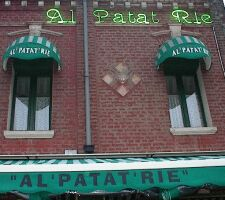

À ches drein, j'm'en fus en Picardie et en Ouallonnie pouor eune conféthence entouor les langues collatérales - chein tchi veurt dithe des langues coumme lé Jèrriais, lé Picard, l'Ouallon, et l'Français, ou coumme lé Gallouais, lé Manx et l'Irlandais, ou coumme l'Angliais, l'Fliamand et lé Scots d'Ulster, tchi sont d'la même fanmil'ye.
La preunmié partie d'la conféthence eût lieu à Amiens en France tch'est dans l'dêpartément d'la Somme en Picardie. Amiens est app'lé la Vénise du Nord, car y'a un tas d'cannieaux là à côté d'la grande cathédrale. Lé paysage est bein pliat là auve des clios jusqu'à l'horizon et juste tchiques cliochièrs à mèrtchi les villages. Quand j'tais là y'avait la bliâse, et dans chutte contrée mystéthieuse dé r'vénants nou craithait quâsiment vaie des silhouettes dé soudards d'la Preunmié Dgèrre Mondiale à avanchi dans l'pité vèrs les tranchies.
La langue Picarde est un mio coumme lé Jèrriais, et auve un mio d'pratique il est pôssibl'ye dé l'comprendre pus ou mains. Par exempl'ye, à la pliaiche dé “lé”, i' dithent “ech” et à la pliaiche dé “l'” i' dithent coumme dé raison “ch'”. Mais eune chose întérêssante est qu'lé Picard est sustout pâlé par l's ouvrièrs, car la Picardie est eune région dé minnes et d'mannifactuthes. Bein seu, nou pâle lé Picard sus les fèrmes étout, mais ch'est eune langue d'la ville d'eune manniéthe qué l'Jèrriais n'est pon.
 J'mangis dans un restaurant tchi n'sèrvait qu'les patates dans lus “dgiaquettes” - et tchi grandes pliat'lées étout. L'restaurant avait nom “Al' Patat'rie” tchi veurt dithe “la patat'tie” coumme dé raison.
J'allînmes à un concèrt. Y'a des jannes gens tchi font du rock en Picard - mé, jé n'dis pon qu'ch'est bein mûsical, mais il' aiment en faithe du brit. J'éthons-t-i' bétôt du rock Jèrriais quand les mousses tchi font du Jèrriais achteu dans l's êcoles sont un mio pus vièrs? J'l'espéthe bein, mé!
Y'a étout eune vielle tradition à Amiens d'faithe des pièches dé thiâtre en Picard - auve des mathionnettes. Ches poupettes-là ont lus thiâtre bein modèrne à ieux, est nou-s'y présente des pièches rîsibl'yes dans tchi qu'les mathionnettes sont tréjous à faithe du fanne et à crititchi les grôsses têtes d'la ville. J'm'en fus vaie eune d'ches pièches à eune séthée d'poésie Picarde et d'tchultuthe là.
Duthant la conféthence jé présentis un papi entouor l'ensîngnage du Jèrriais ichîn et les r'lations entre l'Jèrriais, l'Dgèrnésiais et l'Nouormand. Mais y'avait tchiques journées d'lectuthes întérêssantes entouor les difféthentes langues, et j'pâlis auve des Brétons brétonnants et gallaisants, des Picards, des Ouallons, d's Irlandais, des Catalans, des Tchubecouais, des Suisses et d's Espangnos.
I' m'sembliait qué j'tais coumme un marmoûset dans eune cage à faithe des expéthiments sus, pa'ce qué touos l's aut's lînguistes là voulaient mé r'gistrer à pâler l'Jèrriais et dé mé d'mander des tchestchions. Mais ch'fut eune surprînse dé saver combein qu'i' y'en avait tchi connaîssaient dêjà l'Jèrriais par mouoyen d' l'Ithangnie et des livres coumme “Les preunmié mille mots”.
“Mi j'étoais fin contint d'èn apprinde edsus Jersey vu que por vous ch'est l'même tchestion qu'à nou moéson,” s'fît en Picard Jean-Michel Eloy, directeu du Centre des Êtudes Picardes dé l'Unnivèrsité d'Amiens, “o n'vut point le vir moérir, ech parlage ed nos tayons, mais o ne sait mie pus ecmint le faire vive.”
Et né v'là exactément chein tch'est înmportant: dé travailli ensembl'ye pouor saûver et faithe valer nos langues.
Pouor finni la conféthence jé crouaîsînmes la frontchiéthe pouor aller à Tchèrlerouai en Belgique pouor des d'bats et des concèrts. Y'a eune partie d'Belgique où'est qu'nou pâle Picard étout, mais à Tchèrlerouai ch'est qu'des gens pâlent l'Ouallon.
“Ça nos fét branmint du pléji d'veî in Jèriès roci an Walonîye èyèt d'l'ètinde divisér s'lingâdjè,” s'fît en Ouallon Jean-Luc Fauconnier, Président du Conmité des langue locales d'la Commeunauté Française dé Belgique, - et acouo eune fais m'èrv'là coumme un marmoûset dans eune cage à rêpondre ès tchestchions entouor Jèrri et l'Jèrriais, et j'fis étout eune entreveue pouor la télévîsion là-bas.
Ch'est r'mèrquabl'ye qu'en Belgique quand i' pâlent Français i' dithent “nonante” pouor nénante - tout coumme dans l'Français officiel dé Jèrri.
La Ouallonnie est un mio pus liain d'Jèrri qu'la Picardie, et dont pouor un Jèrriais l'Ouallon est pus difficile à comprendre - mais lus mûsique est bein aîsi à apprécier. J'allînmes à des concèrts là mais tchi n'taient pon des concèrts dé mûsique traditionnelle - y'avait d'la bossa nova, du “contrée et ouestèrne” et du jazz et du rock, touos en Ouallon. Ma fé sont-i' à “rotchi”, les Ouallons! Et quand i' “roquent” “toudi in voye”, ch'n'est pon dû d'comprendre tch'i' veulent dithe: “tréjous sus la vouaie”.
J' “roqu'thons”-t-i' en Jèrriais étout?
Geraint Jennings
Novembre 2001
Viyiz étout: